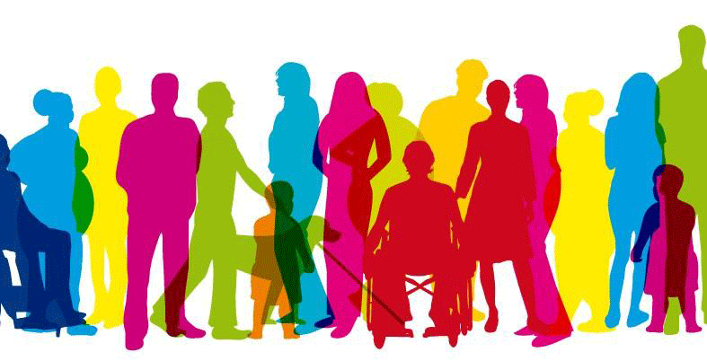
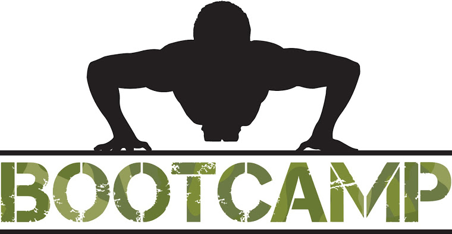
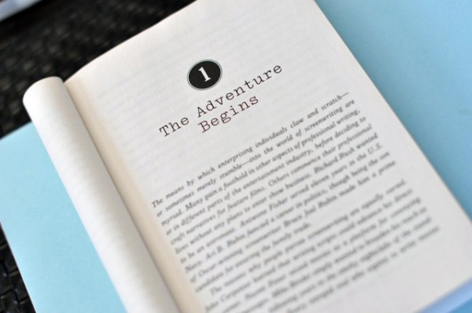

brodenbeck design
a blog for the aspiring web developer
About This Blog
From start to finish, my personal journey of becoming a web developer. I begin with no talent, no knowledge, and no training to hopefully never ending the process of learning and creating.
Archives
Thoughts on Diversity
The Crippling Terror of Being a "Female Developer"An Introduction to the Bootcamp Frame-of-Mind
The Beginning
Thoughts on Diversity
Posted on March 28, 2016 by Britta Rodenbeck
It's no secret that the tech field is becoming increasingly more diverse by making diversity a goal for hiring, training, etc. But what is diversity? Many companies, agencies, start-ups, and individuals obviously will cite gender disparities, race inequalities, and the like. Those sorts of demographic instances that are recorded on an application or a general census kind of survey are the instances that are being sought out explicitly. But does diversity end there?
As I applied to Grand Circus's Java Apprenticeship program (which, to mention, I was not accepted into), a question used to display my logical skills was presented in the written application. Unfortunately, I don't have the specific wording on the question, but I will do my best to illustrate the inquiry to the extent that is necessary to make my point.
The Crippling Terror of Being a "Female Developer"
Posted on March 22, 2016 by Britta Rodenbeck

After spending the past few days basically out of commission on any pre-work due to having fun on the weekend and having a 24-hour bug, I'm back to work today, Tuesday, to get through an introduction to Git and to JavaScript. Sidenote: our training on JavaScript uses JavaScript for Cats which I think is pretty wonderful. However, for some reason, today I seem plagued by the thought of the future. I guess I haven't mentioned this before, but my goal through all of this training and career advancement is to one day be a full-stack developer. I want to do it all; I want to be able to converse intellectually with everyone in the tech industry; I never want to stop learning. But with all of that comes an absolutely agonizing thought: I am going to be a female developer.
Perhaps this stems from this complete moron posting some sort of stupid thing on Facebook saying that feminism is stupid and unnecessary, but for the past day or so, I've been on a feminism tirade from implementing non-traditional elements into my upcoming wedding to basically questioning everything I'm doing right this moment. There is a vocal push in the tech community that diversity is strength, that Blacks and females and any underrepresented population within the workplace need to be sought out and empowered to make a more equal community. And let me tell you, this field desperately needs it. So did psychology in a way, but from a different perspective. I was elated when I had a male counterpart in group work (honestly, it happened maybe twice in my entire undergraduate career). The horrifying part about this, though, is I'm starting already to feel the pressure of being the female.
An Introduction to the Bootcamp Frame-of-Mind
Posted on March 14, 2016 by Britta Rodenbeck
Just last week I was accepted into a front-end web development bootcamp with Grand Circus, an institution focused on training people in the Detroit, Michigan area for careers in the tech field. The field seems to be growing at an alarmingly quick rate in the metro area, something that is good for those of us looking to break into the scene.
This is completely foreign to me. From an extremely young age, I've always assumed that the order of education and career looked a lot like...
- Graduate high school
- Go to college
- Graduate college
- Get a job with degree
- Stay at job until retirement
The Beginning
Posted on March 7, 2016 by Britta Rodenbeck
It's always a difficult thing to start something new, especially when you've been doing the something old for any extended amount of time. I think a lot of the time people won't try their something new because their something old still feels comfortable. It often takes a negative event of great proportion to transition. Luckily, I haven't encountered that negative event, at least not to the extent that many have.